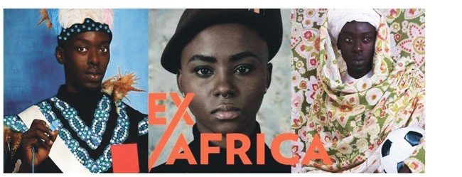

Disponível em: http://www.soubh.com.br/exposicoes/exposicao-ccbb-africa. Acesso em: 12 jul. 2018 (adaptado).
TEXTO 1
A frase em latim “Ex Africa semper aliquid novi”, do escritor romano Caio Plínio, dita há 2.000 anos, significa “da África sempre há novidades a reportar”. A partir dessa ideia, o curador alemão Alfons Hug montou a exposição “Ex Africa”, que conta com 18 artistas de oito países africanos e dois artistas brasileiros. A ideia da mostra é retratar a produção artística africana sem estereótipos aos quais estamos acostumados, como objetos de artesanato e referências iconográficas.
Disponível em: https://www1.folha.uol.com.br/ilustrada/2018. Acesso em: 12 jul. 2018 (adaptado).
TEXTO 2
Até as vésperas da era colonial moderna era comum encontrar as imagens positivas sobre a África. Árabes e europeus descreveram as formas políticas africanas altamente elaboradas e socialmente aperfeiçoadas, entre as quais se alternavam reinos, impérios, cidades-Estado, entre outras. Após a conferência de Berlim (1885), que definiu a partilha colonial da África, essas imagens “simpáticas” começaram a sombrear. Reinos e Impérios foram substituídos pelas tribos primitivas em estado de guerra permanente, umas contra outras, para justificar e legitimar a Missão Civilizadora, que até hoje alimenta o imaginário da África no Brasil.
VIEIRA, F. S. S. Do eurocentrismo ao afropessimismo: reflexão sobre a construção do imaginário “África” no Brasil.Em Debate. PUC-Rio, n. 03, 2006 (adaptado).
A partir dos textos apresentados, avalie as afirmações a seguir.
I. A África tem sido pensada, por muitos, como um único país, compreendida de forma monolítica, como se fosse formada por cultura única, ou, até mesmo, um lugar de povos sem cultura alguma, o que contribui e reforça a exclusão social das obras africanas do sistema das artes visuais.
II. Construídas sob a égide do clichê da miserabilidade, as clássicas representações sobre a África, que retratam o continente como um celeiro da tradição, do arcaísmo, da produção manufaturada e artesanal, são estereótipos que precisam ser superados, por serem incompatíveis com a multiplicidade de expressões artísticas africanas.
III. Os estereótipos sobre o continente africano foram construídos a partir de interesses políticos, culturais e econômicos que sustentaram, durante séculos, projetos de exploração e ações excludentes.
A. I, apenas.
B. III, apenas.
C. I e II, apenas.
D. II e III, apenas.
E. I, II e III.
Fonte: As questões desse simulado foram obtidas na prova disponibilizada no site do INEP - Instituto Nacional de Estudos e Pesquisas Educacionais Anísio Teixeira.
Créditos: Inep - Enade
Créditos de imagem: ENADE - Tecnologia em Logística, 2018.